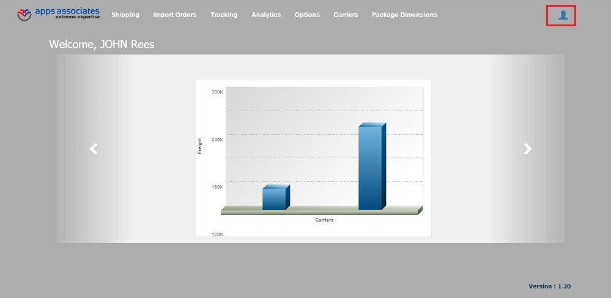
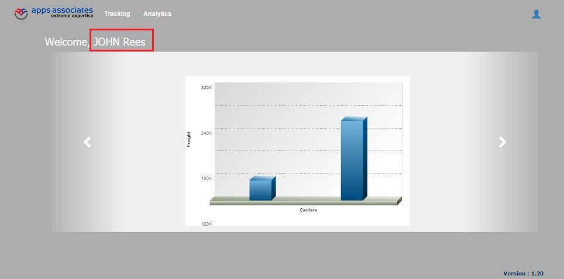
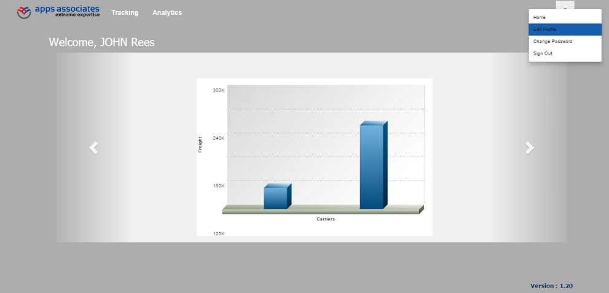
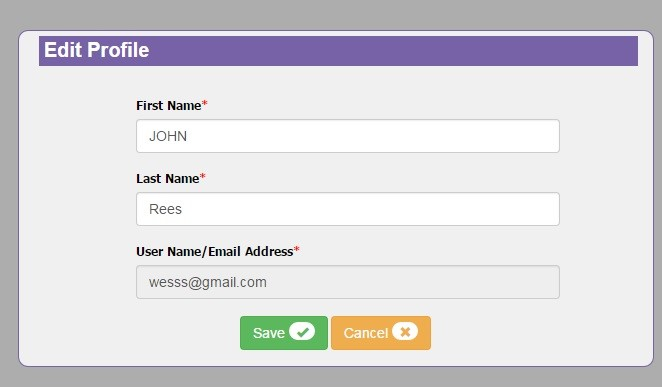
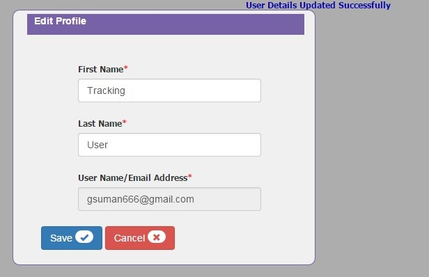

 The ShipConsole provides other functionality like Edit Profile, ChangePassword, Signout and Help navigations in a dropdown(MouseOver) to the users from any page(Screen) as in Figure 5.1.
 Using these navigations from page to page helps the user to use ShipConsole effectively.
 The user can find these functionalities on the top right corner of the screen on mouse over as shown in the Figure 5.2, only when he/she navigates from ShipConsoleIndex page to any respective screen.

Figure 5.1
 Beside the dropdown icon, the user can also find “HOME� icon inside the dropdown (Figure 5.1) which navigates to the shipConsoleIndex screen(home page).Figure 5.1
On Mouse Over a dropdown list will be displayed as below Figure 5.2

Figure 5.2
Edit Profile |
It navigates to the Edit Profile. For more information, Please refer to Figure 5.3 |
ChangePassword |
It navigates to the Change Password. For more information, Please refer to Change Password |
Sign Out |
It navigates to the Ship Console login page. |
Help |
It navigates to the Ship Console User Guide. |
Edit Profile :
• If the user want to edit his/her profile i.e., want to edit 'FirstName' or 'LastName' as in the Figure 5.3, then user can click on the Edit Profile when he/she navigates from ShipConsoleIndex page to any respective screen., the following popup Figure 5.5 opens.

Figure 5.3
When user selects the option (for example: EditProfile), selected option is shown in below Figure 5.4

Figure 5.4
The EditProfile popup is shown below Figure 5.5

Figure 5.5
• Once the user enters the details and click on Save, the details will be updated. Otherwise click on Cancel Button to exit.
On successful update, it displays the appropriate message, as shown below in the Figure 5.6

Figure 5.6
Now, the profile name will be updated from 'JOHN Rees' (Figure 5.3) To 'Tracking User (Figure 5.7) in the ShipConsoleIndex screen.
Figure 5.7